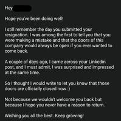
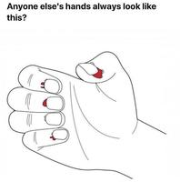

0
Longtime Slashdot reader schwit1 shares a report from TWZ: A Russian satellite, Kosmos 2612, may have passed within approximately 85 feet (26 meters) of a U.S.-registered satellite belonging to commercial imagery provider ICEYE. This would be an extraordinarily close and potentially dangerous pass-by for two objects in space traveling at thousands of miles per hour. For weeks beforehand, ICEYE-X36, which would be of special interest to Russia, had already found itself in increasingly close orbital alignment with its pursuer. The two satellites now look to be drifting further and further apart, but the episode has been a clear sign of what is to come as the potential for conflict in space only continues to grow.
Publicly available space tracking data from the satellitemap.space and orbitalradar.com websites show that Kosmos 2612 (also written sometimes Cosmos 2612 and abbreviated K2612) and ICEYE X36 had their especially close encounter at approximately 16:07 UTC today. Private space services company LeoLabs also told TWZ today that it could not "confirm or contradict what other data sources have stated publicly," but that it has "high-confidence that the objects came within approximately [emphasis in the original] 500 meters [1,640 feet] of each other." Kosmos 2612 had been making progressively closer passes by ICEYE X36 in recent days. "This is the most advanced and potentially dangerous uncooperative RPO we've observed," Adam Marsh, LeoLabs vice president for technical solutions, separately told Breaking Defense.
"It's important to note that 'red' on 'blue' engagements, such as this, are relatively uncommon in Low Earth Orbit (LEO)," LeoLabs' report points out. At the same time, "this was not a routine conjunction or 'fly by.' The sequence included a controlled approach, changes in relative position, close-proximity loitering, additional small maneuvers, and a controlled departure. The behavior is consistent with sophisticated rendezvous and proximity operations (RPO)."
"We can only speculate about the operation's goal, but it could have been anything from simply intimidation to outright destruction or sabotage of a U.S.-registered satellite," CSIS' Clayton Swope told TWZ. "Perhaps the operation is on hold. There are, however, several other satellites that shadowed ICEYE X36 back in May that could be brought in[to] action too."
Read more of this story at Slashdot.
An anonymous reader quotes a report from TorrentFreak: Last month, Magistrate Judge Thomas Hixson ordered Meta to hand over the command histories of the servers it used to torrent pirated books. These logs would presumably reveal how Meta's torrent clients were set up, including any changes to their upload settings. [...] The server logs could reveal what happened on Meta's machines. However, publisher Entrepreneur Media also wants to know who approved the torrenting activity.
Entrepreneur Media, which publishes Entrepreneur magazine, filed one of the related lawsuits where it accuses Meta of contributing to piracy by uploading (seeding) works to third parties, similar to the authors' contributory infringement claim. To find out more, the publisher asked Meta to identify everyone who "made, authorized, or approved" the decisions to obtain the shadow library datasets, and to do so via BitTorrent.
Meta's answers named several people who are believed to have been involved in data-related decisions. However, Meta said it couldn't identify anyone who "formally" made or approved decisions to acquire or use books for its first two Llama models. Those decisions were often the result of team consensus, Meta argued. When it came to the torrenting itself, Meta pointed to the employees who ran the downloads, describing their choices as technical decisions.
Meta added that the acquisition of data from Anna's Archive went through an internal legal review in early 2024, which involved its in-house lawyers. In other words, the company didn't name anyone higher up who approved the use of BitTorrent. "On that construction no one at Meta decided to torrent anything, yet Meta torrented shadow libraries repeatedly from 2022-2024," Entrepreneur Media countered. An internal Meta logbook warned that using torrents would involve sharing copyrighted material with others. "Using torrents would entail seeding the file such as sharing content outside. This would be legally not okay," the logbook stated.
Although Meta admits downloading data from LibGen and Anna's Archive via BitTorrent, it claims no one "made, authorized, or approved" a decision to distribute the material and that measures were taken to limit seeding. Meta's own expert previously estimated that uploads from its AWS servers amounted to no more than roughly 30% of the data downloaded during a period in 2024.
Judge Thomas Hixson is not convinced and ordered (PDF) the company to identify everyone involved in approving the downloads, including those who decided "whether or how to seed, or to mitigate seeding."
Read more of this story at Slashdot.
Ukraine says it carried out the world's first evacuation of a wounded soldier by aerial drone, using a heavy-lift hexacopter after enemy drones and landmines made conventional ground evacuation too dangerous. NBC News reports: Shared by the 92nd Separate Assault Brigade on Monday, the video shows the soldier strapping himself into a large drone and being flown at what appears to be relatively low altitude over blurred-out territory. The drone carefully lowers him, and the drone operator greets him with "Welcome back to the ground!" The video also shows blurred faces of drone operators who carried out the mission.
The post said the unidentified infantryman was wounded at his position. "Due to intense enemy drone activity and the presence of landmines, evacuation using conventional unmanned ground vehicles was impossible," the brigade said. "At that point, the specialists in our unit took it upon themselves to attempt something that had never been done before: evacuating a serviceman using an aerial drone," it added.
The craft was a heavy-lift hexacopter, it said, originally designed as a bomber by a Ukrainian manufacturer. It looks about twice the size of the soldier in the video. The specialists working on the mission had to ensure the drone could carry a human being without flipping over or swaying excessively, according to the unit.
Read more of this story at Slashdot.
Sony has revived its Walkman lineup with three Android 16-powered high-end music players ranging from $1,900 to $5,900, topped by the gold-plated NW-WM1ZM3 with 256GB of storage. The Register reports: The Japanese giant named the new models the NW-WM1ZM3, NW-WM1AM3 and NW-ZX900. All can store and play many codecs, including MP3s, WMA, and FLAC files, plus others like Direct Stream Digital (DSD) and Apple Lossless, which use various tricks to avoid nasty artefacts accruing during the digitization process. Sony also says it has used "key components made from oxygen-free copper" because that apparently delivers "uncompromising sound quality."
The machines also include "screws featuring a low-resistance gold-plated treatment ... providing a stable ground connection that delivers powerful bass, an expansive soundstage and smooth, extended high frequencies." Sony claims even the cabling it's used in the devices "further reduces noise and preserves signal integrity for rich, detailed sound." They're also housed in carefully-milled slabs of copper -- gold-plated in the case of the NW-WM1ZM3 -- because that apparently improves sound, too.
And then Sony's gone and spoiled it all by offering Bluetooth connectivity, a notorious music-mangler, in addition to wired headphone ports. Sony's US site lists all three devices, which run Android 16 and include Wi-Fi so they can access streaming music services. All are USB-chargeable and Sony claims their batteries allow 30-odd hours of music playback.
Read more of this story at Slashdot.
Security researchers say Meta's Muse AI assistant exposed thousands of users' shared conversations because conversation titles were placed in subdomains that could be discovered through public DNS records. Meta has since suspended the sharing feature while it considers making changes. Ars Technica reports: Like many online services, Muse has allowed users to share searches, conversations, images, and similar content with other people. Such share features usually involve clicking an option to create a unique URL that anyone can use to load a page hosting the content. To keep potentially sensitive information from being accessible to unintended people, the URLs typically contain a long sequence of text that can't be easily guessed.
Muse, which Meta CEO Mark Zuckerberg said last month was "built from the ground up for privacy and security," seems to take the same precautions. But a central design decision for constructing URLs has made the links easy to discover. As a result, researchers from security firm Claroc said they were able to enumerate 6,800 links Muse users created for sharing conversations with others. After opening a few hundred of them, the researchers found information that was clearly not intended to be publicly available... [...]. "If you had asked us beforehand, we would have guessed that gathering these would take real effort," the researchers wrote. "It took one query."
[...] The easiest way to discover the URLs is to perform a passive DNS search through one of many available commercial services. Passive DNS records store the historical resolution of domain names to IP addresses, as well as nameserver, and mail-server records over time. Passive DNS systems typically collect DNS responses from sensors positioned at recursive DNS resolvers or other infrastructure. A passive DNS record is generally created when a monitoring system observes a DNS response. In the case here, once the intended party clicks on the share link, the DNS information is recorded in a searchable database.
Claroc researchers were able to discover the Muse share links because all of them use the domain name cf.metaaiusercontent.com. Discovery is further made easy by the decision to add the conversation name to the URL, along with a long string of text. Simplified examples of such links are home-sale-budget-9f21c8a3.cf.metaaiusercontent.com, q3-revenue-review-7b1e42f0.cf.metaaiusercontent.com, and loan-application-draft-a4c9e2.cf.metaaiusercontent.com. It's this last design decision, putting the conversation title in the subdomain rather than in the URL path, that makes public discovery possible.
Read more of this story at Slashdot.
The Trump administration has banned DeepSeek AI from most US civilian federal agencies, ordering the removal of the Chinese company's models and technology developed using them. The Department of Homeland Security did not specify the security threats behind the decision. The BBC reports: The order (PDF) is broad, as it requires agencies to ditch "all DeepSeek and DeepSeek-affiliate products, and third-party products and services developed using DeepSeek implementations." Complying will be tricky as it is not clear which third-party products and services have been developed using DeepSeek's wares. Nor is it clear whether "developed using" means providing ongoing access to DeepSeek models via API or simply refers to any app vibe-coded with the help of DeepSeek.
It also leaves open the question of AI gateways. Services such as OpenRouter and Vercel AI Gateway make DeepSeek's models available through APIs. And those using gateway services may find themselves using DeepSeek models without meaning to do so. OpenRouter, for example, "routes requests to the best available providers for your model." It selects what the service deems to be the best fit provider of AI services. Vercel AI Gateway does the same by default. So federal civilian agencies could be using DeepSeek models inadvertently, if they haven't taken steps to constrain their AI providers.
Read more of this story at Slashdot.
An anonymous reader quotes a report from Reuters: Nscale is in talks to sell AI computing power to Claude maker Anthropic in a new deal that could be worth about $45 billion, a person familiar with the matter told Reuters on Monday. The data center developer is seeking another major deal with the AI lab for a second facility at its Monarch data center campus in West Virginia, the person said. In August, Anthropic struck a deal to spend $45 billion to rent AI cloud computing power from Nscale's West Virginia data center campus. A second Monarch building would deliver 460 megawatts of computing power using Nvidia's advanced Vera Rubin AI chips, according to the source. [...] According to the Nscale prospectus, Microsoft and Anthropic are expected to be the company's major customers in the future. Further reading: Microsoft Abandons UK AI Supercomputer As Grid Struggles to Keep Up
Read more of this story at Slashdot.
Microsoft has reportedly abandoned plans to serve as the anchor customer for Britain's largest proposed AI supercomputer after learning that the project's Essex data center might not receive sufficient grid power until the early to mid-2030s. "Its departure leaves Nscale without a publicly announced customer for the site, although the neocloud insists the project is still going ahead," reports The Register. From the report: When the deal was announced in September 2025, the plan was to pack 23,040 Nvidia GB300 GPUs into a 50MW facility, with room to expand to 90MW. Microsoft would use the computing power for its Azure cloud services, with the first chips expected in early 2027. One important detail remained: how to power it.
As The Guardian reported last month, UK Power Networks warned Nscale that the grid capacity needed might not be available until the 2030s. A UK Power Networks spokesperson told The Register it could not discuss individual connections due to obligations under Section 105 of the Utilities Act. "However, in general, many datacenters, whilst they can connect to our distribution network, are awaiting works on the national transmission network which we do not own," the spokesperson said.
Nscale, meanwhile, isn't letting the small matter of losing its biggest customer dampen its enthusiasm. "We remain committed to both the Loughton project and the UK and we are exploring alternative power sources for the site, in addition to other expansion sites in the UK. Our relationship with Microsoft remains strong and long-term, and this unfortunate London-wide grid issue has no impact on our other contracts," Nscale told The Register.
Read more of this story at Slashdot.
Elon Musk says a merger between Tesla and SpaceX is under active consideration, with special committees at both companies evaluating a deal that could combine businesses valued at roughly $3.5 trillion. "Do I think it would be a good idea? Yes," Musk said during a call with financial analysts over the quarterly business results of SpaceX on Tuesday. The BBC reports: While Musk noted the certainty of such a merger should not be assumed, and it would need shareholders' support, he said special committees within both companies have been formed to examine the move. "The special committees have not reached agreement on terms of any transaction and there's no guarantee that they will," Musk added. "But I do think there is a lot of merit to merging and a lot to be gained."
[...] The company, which builds space rockets and Starlink internet satellites, is now expanding into offering cloud compute capacity for other tech companies, like Anthropic and Google. That line of business has become the most profitable part of SpaceX, bringing in $7.5bn according to the latest quarterly results (PDF). Starlink also tallied revenue of $5.2bn. SpaceX as a whole, however, is not profitable and has lost $1.1bn so far this year.
[...] Musk said on Tuesday a full merger between the two companies would make sense for the work each is doing around chips, artificial intelligence, software and more. He described himself as a "conflicted party" as the chief executive of Tesla and of SpaceX. Even commenting on the possibility of a merger between the two companies, Musk compared to "tap dancing through a minefield." He added a merger would ultimately be decided by shareholders. At least 50% of Tesla's shareholders would need to approve the merger, which Musk described as "quite a high hurdle to achieve."
Read more of this story at Slashdot.
AMD is expanding its FSR 4.1 upscaling technology beyond Radeon RX 9000-series GPUs to Xbox Series X/S consoles, Xbox Ally handhelds, laptops, and Radeon RX 6000-series graphics cards. The Verge reports: AMD launched its FSR 4.1 update for Radeon RX 9000-series graphics cards in March, and promised to bring the technology to older GPUs and handhelds this year. FSR 4.1 can improve performance in more than 300 supported games, including Cyberpunk 2077, Battlefield 6, and Assassin's Creed Shadows.
[...] While owners of Radeon RX 6000-series GPUs and Gorgon Halo- or Strix Halo-powered devices will get FSR 4.1 today with the latest Adrenalin Edition 26.10.1 drivers, Xbox console owners will have to wait a little longer. "We've worked very closely with AMD to optimize this technology, giving developers another powerful tool for great performance and visual quality for players," says Xbox CTO Scott Van Vilet.
Read more of this story at Slashdot.
New court records reportedly show that DHS targeted Stop Cop City activist Samuel Tunick at an Atlanta airport because he was under investigation for suspected "terrorist activities." However, the CBP officers told him instead that they wanted to search his phone for child sexual abuse material (CSAM). Tunick, who is not accused of terrorism or any other crime beyond allegedly wiping his GrapheneOS phone during the encounter, faces up to five years in prison. 404 Media reports: Instead of saying he was being targeted for suspected terrorism -- although this search happened just at the start of the second Trump administration, it has dramatically broadened what organizations or people may be considered such -- they said they needed his phone to look for "kiddie p*rn." "Good afternoon," an email sent from a Homeland Security Investigations (HSI) official, part of Immigration and Customs Enforcement (ICE), to CBP and other officials reads. "The following subject is scheduled to arrive in ATL [Hartsfield-Jackson Atlanta International Airport] today via DL 1778 @ 1930 Hours. TUNICK is under investigation by HSI/JTTF for suspected terrorist activities." The email includes a photo of Tunick, and asks the officials to direct him to secondary inspection, retain all of his electronics, and collect their passcodes.
As 404 Media first revealed in December, Tunick was charged because he allegedly "did knowingly destroy, damage, waste, dispose of, and otherwise take any action to delete the digital contents of a Google Pixel cellular phone, for the purpose of preventing and impairing the Government's lawful authority to take said property into its custody and control." Matthew Dodge, one of Tunick's lawyers, previously told 404 Media he only found one other case using the same obscure law, a drug trafficking case. "This is extraordinarily rare," Dodge said.
Tunick was part of the Stop Cop City movement in Atlanta, which broadly protested the building of a large police training center, and which authorities investigated for arson, vandalism, and doxing. Tunick is not suspected of any crime beyond the alleged wiping of the phone, and has previously put his current prosecution in the context of the wide spanning cases against other Stop Cop City protesters. The newly filed court record, in which Tunick's lawyers argue that evidence should be thrown out, include new photos and descriptions of the airport encounter. The CBP officials asked Tunick if they were going to find "kiddie p*rn" on his phone, which Tunick immediately denied. "As the evidentiary hearing made clear, these unfounded accusations were nothing more than pretext for a fishing expedition into the depths of Mr. Tunick's devices," the lawyers wrote. They added, "Officer Findley acknowledged that officers had no reason whatsoever to believe Mr. Tunick possessed child p*rnography," referring to one of the officials.
Read more of this story at Slashdot.
OpenBSD 8.0 has been released with major virtualization and hardware upgrades, including support for up to 64 vCPUs per VM, Intel Arc graphics, ARM64 hibernation, and expanded RISC-V support. Linuxiac points out that it marks the "61st release of the security-focused Unix-like operating system." From the report: Several fixes improve compatibility with 32-bit Linux guests, while changes to virtual machine ownership management and interrupt emulation make the virtualization infrastructure more capable. Graphics support has also been upgraded, with DRM drivers updated to those from Linux kernel 6.18.53. Notably, OpenBSD 8.0 adds support for Intel Arc A-Series (Alchemist) graphics cards through the inteldrm driver.
Another important change increases the amd64 kernel's virtual address space from 4 GB to 512 GB, allowing the system to map over 4 GB of video memory. The release also addresses GPU timeout issues affecting some Intel Alder Lake systems. [...] For security, OpenBSD 8.0 adds checks and fixes across the kernel and system utilities, including improvements to pledge and unveil, tighter validation of executable files, and protections against memory corruption and information disclosure. A full list of changes can be found here.
Further reading: Wine Ported to OpenBSD
Read more of this story at Slashdot.
Japan has successfully launched its Martian Moons eXploration (MMX) mission to study Mars' two moons, Phobos and Deimos. Scheduled to arrive in August 2027, "MMX will become the first spacecraft to land on and return samples from Phobos for study back on Earth, which scientists think could shed light on a decades-old mystery about the moons' origins" and resolve whether they were formed from a giant impact or were captured asteroids, reports Space.com. From the report: It was the 10th liftoff of Japan's expendable, two-stage H3 rocket, which was jointly developed by JAXA and Mitsubishi Heavy Industries. After clearing its launch pad today, the 207-foot-tall (63 meters) launch vehicle flew a nominal trajectory through its ascent corridor over the Pacific Ocean, jettisoning its four solid boosters in pairs just before the flight clock reached two minutes. The rocket shed its payload fairings about one minute and 20 seconds later, exposing MMX to the vacuum of space for the first time. [...] MMX is now under its own power, and on course for Mars.
The interplanetary transit will last about 10 months, with the spacecraft scheduled to arrive at the Red Planet in August 2027. When it does, MMX's propulsion module will execute an orbital insertion burn to place itself in a quasi-satellite orbit (QSO) around Phobos, which places MMX within the space around the moon as both circle Mars. MMX will spend about three years in the Martian system, devoting much of that time to studying the 14-mile-wide (22 km) Phobos with its science instruments. The spacecraft also carries the IDEFIX rover, a joint effort of the space agencies of France and Germany, which is scheduled to deploy to the surface of Phobos in late 2028 or early 2029.
After a mapping campaign to select suitable landing sites, MMX will perform two separate touchdowns on Phobos to collect and stow samples in the spacecraft's return capsule. Following its second landing and sample collection, MMX will briefly return to QSO with Phobos before transferring to a more elongated orbit around Mars that intersects with the planet's smaller moon, Deimos, which is just 8 miles (14 km) in diameter. During the last several months of its time around Mars, MMX will perform a series of Deimos flybys before departing for Earth in November 2030. If all goes according to plan, the MMX sample-return capsule will land in Australia in 2031. You can watch a recording of the launch on YouTube.
Read more of this story at Slashdot.
Google is beginning to replace traditional support articles with "Ask Google Help," a Gemini-powered interface that summarizes documentation and lets users troubleshoot through a chatbot. 9to5Google reports: "Ask Google Help" will display a condensed version of the support article with direct troubleshooting steps, with the user then able to type in queries to have Gemini help figure out the next step forward. A "View Sources" button at the bottom of the AI response allows users to still access the original article, but direct links to any of these articles now defaults to the AI experience.
An example can be seen below on the "Secure a hacked or compromised Google account" page that Google's own support account directed users to within the past few days. It can also be seen on the "Fix common issues with 2-Step Verification" page and, as far as we can tell, any support pages on the Google Account Help forum.
Google, as of right now, appears to only be testing this on select support topics. The Google Pixel Help section, for instance, still defaults to articles, whereas the Google Chrome topic has also moved to the new experience. Beyond support pages alone, this new design also impacts the central hub, with links to topics no longer showing by default in exchange for an AI chatbot that helps you find the relevant page.
Read more of this story at Slashdot.
An anonymous reader quotes a report from TechCrunch: Amazon is funding development of a proposed 960-megawatt nuclear plant in Indiana and would be the first customer to buy its power, the companies announced Monday. Utility company American Electric Power (AEP) would operate the plant. X-energy, which designs small modular nuclear reactors and went public in April, would supply the reactors. The new power plant would consist of 12 Xe-100 small modular reactors and be located on the site of a demolished coal power plant just south of Terre Haute. The deal is the second commercial agreement between Amazon and X-energy, and it's three times larger than the first, which was announced two years ago.
Amazon has invested heavily in X-energy, leading a $700 million Series C-1 round in October 2024. The two companies have said they ultimately plan to build 5 gigawatts of new nuclear generating capacity in the U.S. by 2039. Unlike many newly announced power plants, these reactors would be connected to the public electric grid, though Amazon says the power would also serve its data centers.
The companies' aggressive timeline still depends on X-energy successfully delivering its first power plant at a Dow Chemical plant southeast of Houston, Texas. The site, called Seadrift, has recently been at the center of a lawsuit filed by the state of Texas, which accuses the plant of "habitual non-compliance" with water and solid-waste regulations and permits. X-energy has yet to break ground at Seadrift, which will host four Xe-100 reactors to provide the chemical plant with heat and electricity. The company said its construction permit is in the final phases of the U.S. Nuclear Regulatory Commission's review process.
Read more of this story at Slashdot.
Emily Mullin / Wired : Coherence Neuro, which is developing AI models and brain implants to help combat brain tumors, raised a $45M seed from the OpenAI Startup Fund and Founders Fund — It's the latest in a growing wave of bets that AI companies are making on brain data. — OpenAI's venture capital arm …
Ben Cohen / Wall Street Journal : Demis Hassabis says he expects AGI within two to three years, down from his three-to-five-year prediction earlier in 2026, and discusses AI's science potential — YOU CAN LEARN a lot about the people racing to build the world's most powerful technology by asking what keeps them up at night.
Dario Amodei / @darioamodei : Dario Amodei says Anthropic's “race to the top” makes AI safer, cites nine safety decisions with “substantial costs”, and admits mishandling a draft AI bill — Thank you for this, @_NathanCalvin. I appreciate and am a fan of the investigative work you've done on behalf of AI safety and believe your comments are coming from a constructive, honest place, and that it benefits the public to have people whose job is to scrutinize the actions of frontier AI com...
Charlotte Trueman / DatacenterDynamics : Nvidia unveils the DSX POD, a modular containerized version of its Vera Rubin reference architecture to cut data center deployment from six months to 14 days — Details released at GTC Berlin event, taking place this week — Nvidia has claimed its DSX reference architecture for AI data centers …
Ephrat Livni / New York Times : China criticizes the US DHS's DeepSeek ban, vowing “resolute countermeasures” while rejecting allegations from the FBI and AI labs of illicit distillation — The response came after Homeland Security ordered the removal and exclusion of products developed by the Chinese company.
Anthropic : Anthropic and Citrini Research use an internal Claude model to autonomously generate protein minibinders against five scorpion neurotoxins, testing 211 designs — In August, we showed how Claude designed protein minibinders after being given a single prompt.
Reuters : Micron and the union of workers at its Taichung facility sign a multi-issue agreement, without giving details, resolving tensions at its largest Taiwan site — Micron Memory Taiwan and a union representing workers at its Taichung operations said on Wednesday they had signed …
Kieran Smith / Financial Times : Memo: Nscale CEO Josh Payne says it has “more than $100B in contracted revenue”; sources say it still plans to list by the end of 2026 at a $30B-$35B valuation — Founder Josh Payne says demand remains ‘insatiable’ for the services of Nvidia-backed data centre group
Arnaud Bertrand : A look at Chinese philosophical views on AI; one says aligning AI to human values may be a “suicidal mistake” and another fears the “machinization of humans” — We've been looking at AI from the bottom of our own well. Here's the view from China's. — ∙ Paid
Rafe Rosner-Uddin / Financial Times : OpenEvidence says nearly two-thirds of ~1M US physicians use its AI search engine; a source says it is on track to generate $400M-$500M in 2026 ad revenue — Founder of OpenEvidence chatbot says two-thirds of US physicians use the ad-powered tool, prompting a debate about patient care
Reuters : Sources: Samsung and SK Hynix are upgrading their China fabs to produce NAND flash chips with 200+ layers, aiming to fend off fast-growing Chinese rival YMTC — Samsung Electronics (005930.KS) and SK Hynix (000660.KS) are upgrading their China factories to produce more advanced memory chips …
Gabrielle Ng / Bloomberg : Google, Temasek, and Bain: online spending in SE Asia to rise ~17% YoY to $368B in 2026 despite economic headwinds, as businesses harness AI to spur spending — Artificial intelligence is helping Southeast Asia's digital economy deliver robust growth in the face of rising prices and teetering demand …
Financial Times : Netflix execs and industry insiders say co-CEO Ted Sarandos devised its mass-market and international growth strategy, which the now-fired Bela Bajaria executed — Co-chief Ted Sarandos faces questions over content strategy as slowing viewer engagement threatens growth
Dan Goodin / Ars Technica : An unconfirmed report claims PHP2Shell enables RCE on PHP sites; watchTowr says the exploit allegedly affects all versions since PHP 5, released in 2004 — Website admins, brace yourselves. Fixes for what are believed to be uncommonly severe vulnerabilities are scheduled to drop in a little …
Nic Fildes / Financial Times : NextDC's stock fell as much as 44% to AU$5.15 after the Australian data center company cut its earnings forecast by 33%+; its shares were above AU$16 in June — NextDC plunge adds to sector woes as Nvidia holds talks over injecting capital into Firmus after failed IPO